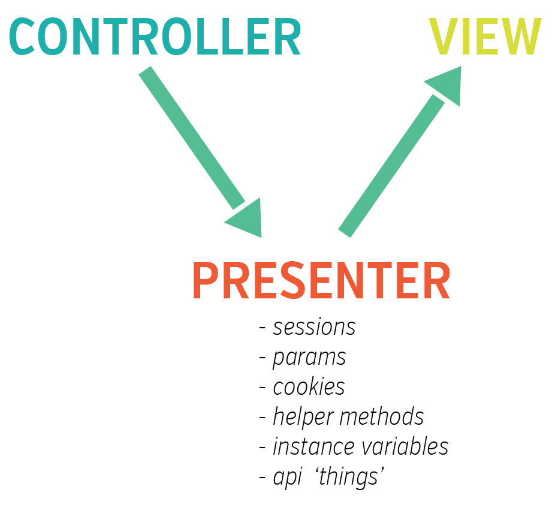

all posts >> Tuesdays with Tom
Working with Presenters
Jan 27, 2015
When you find yourself in the situation that your view needs content from several places then consider a Presenter instead of polluting your view or controller.

Specifics to Rails
The delegate method
In Rails, in order to access your model's attributes, you use the delegate method. There, you list what you need and assign it to the instance variable you plan to use. For example;
delegate :id, :animal_images, to: :model
you need to use to: and state the name of the instance variable that represents your model.
The additional information on the presenter that you don't have in the model. is an referred to as an attribute. These attributes may originate in the presenter class, or they may be methods in the presenter that call out to other things. Examples;
def terms_and_conditions
FinePrint.terms_and_conditions_for(model)
end
def gift_card?
false
end
The Attributes method
The other thing to note is that if you are going to use a models attribute, they need to be assigned to the attributes
attributes :terms_and_conditions, :gift_card?, :id, :animal_images
Lastly, you can also create a flag so that different views have access to different sets of attributes using name: like so;
attributes :gift_card?, name: :gifting
or
attributes :zoo, name: :animal_images